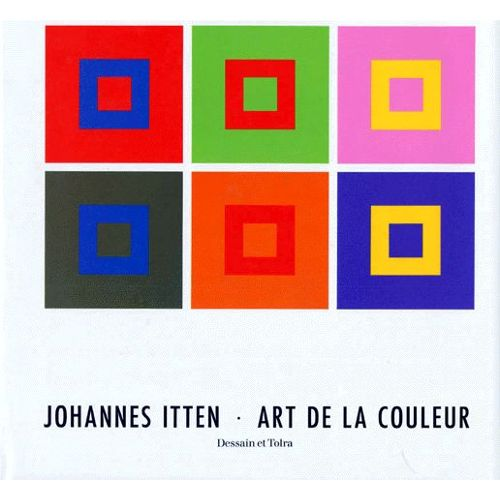

L'HISTOIRE DU CERCLE CHROMATIQUE
L'HISTOIRE
SPECTRE VISIBLE
Le physicien Isaac Newton, en 1676, a montré expérimentalement
que la lumière solaire blanche à l'aide d'un prisme à trois arêtes, peut se
décomposer selon les couleurs du spectre.
Ce spectre renferme toutes les couleurs
principales à l'exception de la pourpre. Newton a fait
l'expérience de la manière suivante :
La lumière solaire vient d'une fente et frappe le
prisme à trois arêtes. Dans celui-ci le rayon lumineux
blanc se décompose en les couleurs du
spectre. On peut recueillir cet éventail de couleurs sur
un écran et on obtient ainsi une bande spectrale
colorée. Elle s'étend d'une manière continue,
c'est-à-dire sans interruption, du rouge, de l'orange, le
jaune, le vert, le bleu, jusqu'au violet. Si l'on
concentre cette bande colorée à l'aide d'une lentille,
on obtient sur un second écran, par addition des
couleurs, de nouveau, une lumière blanche. La
bande colorée est née par réfraction. Il y a encore
d'autres façons de créer physiquement de couleurs telles que l'interférence, la réflexion, la polarisation et la fluorescence.
Si l'on partage la bande spectrale en deux parties,
par exemple rouge-orangé-jaune et vert-bleu-violet
et que l'on rassemble chacun de ces deux groupes à
l'aide de lentilles, on obtient deux couleurs mixtes,
qui mélangées à leur tour, donnent du blanc.
Deux espèces de lumières qui, mélangées, donnent
du blanc, se nomment complémentaires.
Si, dans la bande de couleurs du prisme. nous isolons une couleur,
par exemple le vert, et nous rassemblons à l'aide d'une lentille les autres ,rouge, orange, jaune, bleu, violet, nous obtenons du rouge comme couleur mixte. C'est-a-dire la couleur
complémentaire de celle que nous avions isolé.
Si nous isolons le jaune, les couleurs restantes : rouge, orange, vert, bleu,
violet, nous obtenons la couleur complémentaire du jaune, le violet.
Chaque couleur du spectre est complémentaire de
la couleur mixte composée par toutes les autres
couleurs du spectre.
Dans la couleur mixte, nous ne pouvons pas distinguer les couleurs contenantes. Cela est différent de la musique, un musicien, dans un mélange de sons, peut percevoir les sons Individuels.
Les couleurs naissent d'ondes lumineuses, qui
sont une espèce particulière d'énergie électromagnétique. Au moyen de notre œil, nous pouvons
percevoir uniquement de ondes lumineuses de 400-700 gg. L'unité de mesure des longueurs d'ondes est le micron.¹
¹ 1 micron mi 1 µ = VICO° mm.
1 millimicron c I mis = 1/1.000.000 mm.
Johannes Itten - L'Art de la couleur
Ultraviolets et Infrarouges
Chaque couleur du spectre possède une longueur
d'onde² : elle peut se déterminer exactement par
l'indication de sa longueur d'ondes ou de son nombre de vibrations.
Les ondes lumineuses, en elles-mêmes, sont incolorées.
La couleur naît seulement dans notre œil et dans notre cerveau.
On n'a pas encore pu expliquer comment nous percevons ces
ondes. On sait seulement que les couleurs individuelles
naissent de la qualité des diverses perceptions lumineuses.
Nous avons encore à examiner
le problème Important de la couleur des corps.
Si l'on place deux filtres colorés, par exemple
rouge et vert, devant une lampe à arc, on obtient
du noir. Le filtre rouge absorbe dans l'ensemble
du spectre, tous les rayons jusqu'au domaine du
rouge. Le filtre vert absorbe toutes les couleurs
jusqu'au vert. Ainsi, il ne reste plus de couleur
disponible et l'effet réalisé est du noir. Le couleur
d'absorption se nomme aussi couleur de soustraction.
Les couleurs de corps sont pour le plupart de ces
couleurs de soustraction. Un récipient rouge parait
rouge parce qu'il absorbe toutes les autres couleurs de la lumière et ne réfléchit que le rouge.
Quand nous disons : Ce pot est rouge, cela signifie en réalité : la surface du pot a une composition moléculaire telle qu'elle absorbe tout le rayonnement lumineux à l'exception du rouge. Le pot en lui-même est incolore. Il a besoin de lumière pour paraître coloré.
² Les longueurs d'ondes des couleurs du spectre et
leur nombre de vibrations par seconde sont :
Couleur • longueur d'onde • nombre de vlb.
rouge 800-650 mg 400-470 billions
orangé 640-590 mg 470-520 billions
jaune 580-550 mg 520-590 billions
vert 530-490 mg 590-650 billions
bleu 480-460 mg 650-700 billions
Indigo 450-440 mg 700-760 billions
violet 430-390 mg 760-800 billions
GOETHE & NEWTON
À y regarder de près, les personnalités des deux chercheurs sur couleurs, Newton et Goethe, apparaissent étonnamment voisines. C’est tout au moins ce qui se dégage des
lectures de leurs œuvres principales sur ce sujet, l’Optique de Newton d’une part, et le Traité des couleurs de Goethe et ses Matériaux pour l’histoire de la théorie des couleurs de l’autre. Les commentaires de Michel Blay et de Maurice Élie
autour de ces œuvres ne me semblent pas contredire ce point de vue, seul celui plus ancien de Rudolf Steiner fut de nature à jeter beaucoup d’huile sur le feu de la controverse Goethe et Newton furent tous deux dotés d’une logique implacable que ne prétéritait pas pour autant leur intuition créatrice. Ils prétendaient, tous deux, de la même manière, avoir trouvé dans l’expérimentation directe les clés des mystères de la couleur. Ils voulurent donner l’impression, en effet, que c’était à travers le dédale des conclusions de leurs nombreuses expériences que germèrent leurs théories. Or, à y regarder de plus près, chez l’un comme chez l’autre, les théories sont sous-tendues par le senti-ment profond de l’existence de phénomènes primordiaux et universels (urphenomen) régissant la nature et préexistant à toute expérience. Chez l’un comme chez l’autre, la démarche
expérimentale est, de fait, biaisée par une foi inébranlable en un absolu régissant le monde; dans l’un comme dans l’autre cas, cette tension entre discours métaphysique et expérience est à la fois source de créativité jaillissante, mais porte aussi en elle, de multiples risques d’erreur..
 Goethe et la théorie
des couleurs opposées
Goethe et la théorie
des couleurs opposées
Johannes Itten - L'Art de la couleur
ITTEN, LE CERCLE CHROMATIQUE EN DOUZE PARTIES
Comme introduction à l'enseignement constructif des couleurs nous donnerons le cercle
chromatique en douze parties issu des couleurs primaires : jaune, rouge, bleu (figure 37). On sait que celui qui voit les couleurs d'une façon normale est en état de trouver un rouge, qui ne soit ni bleuâtre ni jaunâtre, de trouver un jaune qui ne soit ni verdâtre ni rougeâtre, et un bleu qui ne soit ni verdâtre ni rougeâtre. Il est à conseiller, pour la vérification de chaque couleur, de considérer
celle-ci devant un fond neutre gris. Les couleurs primaires doivent être choisies très soigneusement. Dans un triangle équilatéral nous plaçons les trois couleurs primaires de façon que le jaune soit en haut, le rouge en bas et à droite et le bleu en bas et à gauche. Le triangle est inscrit dans un cercle, où nous construisons un hexagone. Dans les triangles restants nous étendons les trois couleurs mixtes, constituées chacune par deux des couleurs primaires.
Nous obtenons ainsi les couleurs secondaires : jaune et rouge = orangé jaune et bleu = vert rouge et bleu = violet.
Les trois couleurs secondaires doivent être mélangées avec beaucoup d'exactitude ; elles ne doivent tendre ni à l'une ni à l'autre des couleurs primaires. L'expérience montre que les couleurs mixtes secondaires ne se trouvent pas sans difficultés. L'orange ne doit pas être trop rouge ni trop jaune, le violet ne doit pas être trop rouge ni trop bleu et le vert ne doit pas être trop jaune ni trop bleu dans le mélange. Ensuite, à une distance convenable du premier cercle, nous en traçons un autre, formant une bande circulaire, que nous partageons en douze secteurs égaux. Dans cet anneau circulaire nous portons aux emplacements correspondants les couleurs primaires et secondaires, de sorte qu'entre deux couleurs se trouve chaque fois un secteur vide. Dans ces secteurs vides nous portons alors les couleurs tertiaires, qui consistent en mélanges d'une couleur primaire avec une couleur secondaire.
Nous obtenons ainsi :
jaune et orangé = jaune-orangé rouge et orangé = rouge-orangé rouge et violet = rouge-violet bleu et violet = bleu-violet bleu et vert = bleu-vert jaune et vert = jaune-vert.
Ainsi est réalisé un cercle de douze couleurs équidistantes, où chaque couleur prend sa place non interchangeable. Les couleurs se suivent selon l'ordre de l'arc-en-ciel et du spectre. Isaac Newton a obtenu ce cercle chromatique permanent en ajoutant au spectre des couleurs du prisme le pourpre qui lui manquait. Le cercle chromatique est donc complété constructivement. Les douze couleurs sont disposées à intervalles égaux et celles qui se font face sont complémentaires.
Ces douze couleurs peuvent en tout temps se représenter exactement et toutes leurs variations sont faciles à classer. Établir des cercles chromatiques de 24 ou même de 100 couleurs est à mon sens une perte de temps qui ne signifie rien, cela est sans valeur pratique pour l'artiste coloriste. Quel artiste peut se représenter sans autre moyen auxiliaire la couleur N° 83 du cercle chromatique en 100 parties ?
Tant que nos notions concernant les couleurs ne correspondent pas à des représentations colorées fixées avec précision, aucune discussion utile au sujet des couleurs n'est possible. Il faut voir les douze tons de couleurs avec une précision aussi grande que le musicien entend avec précision les douze notes de sa gamme.
Delacroix avait monté sur un mur de son atelier un cercle chromatique, sur lequel étaient inscrites pour chaque couleur toutes les combinaisons possibles. Les impressionnistes, Cézanne, Van Gogh, Signac, Seurat et d'autres honoraient Delacroix comme un grand maître de la couleur. Delacroix et non Cézanne est le fondateur de ce mouvement de la peinture moderne qui s'efforce d'édifier ses œuvres sur des principes concernant la couleur qui soient objectivement saisissables et logiques, et ainsi d'obtenir dans ses travaux un degré plus élevé d'ordre et de vérité.
BIBLIOGRAPHIE
Johannes Itten

Goethe